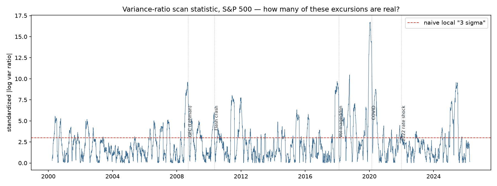
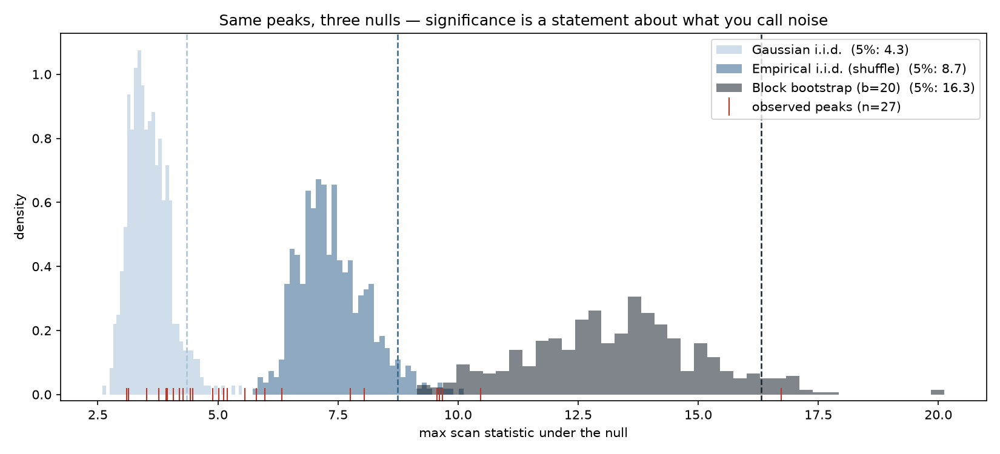
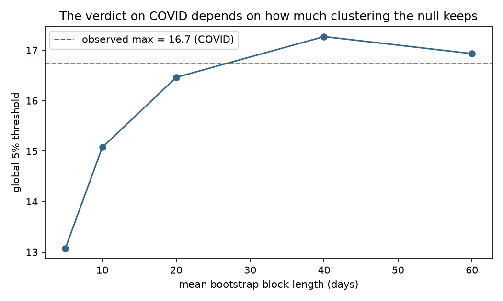

My day job is searching for new particles, and the trade has one iron rule about scanning: if you look in enough places, you will find something. Scan a mass spectrum and local three-sigma bumps appear as a matter of arithmetic — which is why physics reports global significance, deflated by the number of places you looked. We call the correction the look-elsewhere effect, and we compute it the honest way: simulate experiments with no signal, and ask how loud pure noise gets.
Quantitative finance has the same disease under different names — backtest overfitting, p-hacked trading signals, data-snooped anomalies. It also has its own correction literature: White's reality check, and López de Prado's deflated Sharpe ratio and probability of backtest overfitting. Same mathematics, different vocabulary. I wanted to see the effect end to end on a concrete question, so I ran a physics-style scan on a market classic: volatility regime detection.
A bump hunt on the time axis
The setup is deliberately simple. Take 26 years of daily S&P 500 log-returns (2000–2026, free from Yahoo Finance). At each date, compare the variance of the 60 trading days before against the 60 days after — a standardized absolute log variance ratio. A volatility regime change shows up as a localized excursion of this statistic: a sliding signal region tested against its own sideband, except the axis is time rather than mass.

Against the naive threshold — treating each date as if it were the only test — the scan finds 27 distinct local “3σ” regime changes. More than one per year. Some sit on celebrated dates: Lehman (2008), the eve of Volmageddon (early 2018), COVID (January 2020, of which more below). Others sit on dates with no Wikipedia page. A naive analysis publishes all 27.
The toys deliver the first verdict
So I did what a physicist does: generated pseudo-experiments. Resample the actual returns in random blocks (a stationary bootstrap, mean block 20 days) — preserving the fat tails and short-range volatility clustering, but destroying the location of any true break — and run the identical scan on each toy. Five hundred times.
Two numbers came back and rearranged my expectations. First: pure noise manufactures 34.9 local “3σ” peaks per 26-year experiment — more than the 27 the real market produced. Second: the global 5% threshold — the bar the scan's maximum must clear to be as rare globally as “3σ” pretends to be locally — sits at 16.3, not 3. Against it, exactly one of the 27 peaks survives: COVID, at 16.7, with a global p-value of 0.036. The Global Financial Crisis — the most famous volatility event of the century, a local 9.6 — does not.
If that feels wrong, hold the thought: it is the paper's point.
The null ladder: significance is a statement about noise
A bump's significance depends on the background model — every physicist learns this the hard way. The market version: which features of returns does your null preserve? I ran the same 27 peaks against three nulls of increasing realism:
| Null model | Keeps fat tails? | Keeps clustering? | Global 5% threshold | Survivors (of 27) |
|---|---|---|---|---|
| Gaussian i.i.d. | no | no | 4.3 | 18 |
| Empirical shuffle | yes | no | 8.7 | 5 |
| Block bootstrap (b=20) | yes | yes | 16.3 | 1 |

Read the table bottom-up and the folk wisdom dies in two steps. Against textbook Gaussian noise — the null every casual “3σ” claim implicitly invokes — two-thirds of the peaks are discoveries. Keep the actual fat tails (excess kurtosis 10.6; days beyond 3σ occur at six times the Gaussian rate) and only the five celebrities remain. Keep the volatility clustering as well, and the market's own texture explains everything but COVID. In this data, ignoring clustering turns out to be the graver sin than ignoring fat tails — the threshold jumps by 7.6 points versus 4.4.
Even COVID is negotiable
The block length b is the null's memory: how many consecutive days of real market behaviour each toy fragment preserves. Twenty days was a choice. So I varied it.

For blocks beyond roughly a month, the toys themselves contain COVID-magnitude volatility episodes as ordinary realizations — and the last survivor falls. This is not a claim that COVID “wasn't real.” It is signal contamination of the background model, the exact phenomenon a physicist meets when the sidebands are drawn wide enough to swallow the peak: a null that preserves months of clustering has absorbed regime-switching itself into its definition of noise. At that point the question dissolves rather than resolves — COVID stops being an anomalous break and becomes a recurring, endogenous feature of the volatility process. Which is, incidentally, what the GARCH school of econometrics has said for forty years. It is oddly satisfying to rediscover it with a bump hunt.
What this buys you in practice
The transferable conclusions, in descending order of generality:
Count your trials. Any scanned claim — a regime break, a backtested strategy, a screened factor — carries a trial factor, and it is usually enormous. Here, the honest threshold was more than five times the naive one. If a result comes from a search and its significance is not deflated, the significance is an upper bound on marketing, not evidence.
State your null, because it is doing the work. The identical peak was a discovery, marginal, or nothing, depending on whether the noise model kept fat tails and clustering. In finance the null is rarely stated at all; “significant” usually means Gaussian-i.i.d.-significant, the weakest rung of the ladder.
Report the sensitivity, not the verdict. The b-scan is one extra figure, and it converts an arbitrary choice into a documented one. My repo's answer to “is COVID a regime break?” is honestly: at what block length?
The scan found 27 regime changes. Noise alone produces 35. One survived an honest null, and even that one is negotiable. If this feels deflating — that is what deflation is for.
Code, toys, tests, and every figure: github.com/dialloboye/market-regime-scan. The companion project — probabilistic electricity price forecasting with calibrated intervals — lives here.